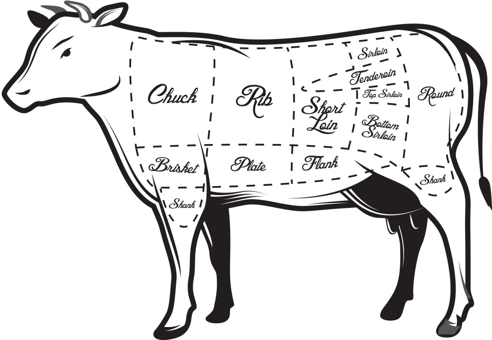

<!DOCTYPE html>
<html lang="en">
<head>
   <meta charset="UTF-8">
   <meta name="viewport" content="width=device-width, initial-scale=1.0">
   <meta http-equiv="X-UA-Compatible" content="ie=edge">
   <title>Document</title>
   <link rel="stylesheet" href="css/main.min.css">
</head>
<body>

   <!-- <div class="map">
      <svg viewBox="0 0 246 169.4">
         <a href="123"><path class="part" data-num="1" data-text="Номер 1" d="M66.4,17.4c0,0-3.5,6.4,0.9,55.4h36.4c0,0,6.5-37.4,3.5-50.4L66.4,17.4z"/></a>
         <a href="234"><path class="part" data-num="2" data-text="Номер 1" d="M143.9,23.7l-36.7-1.3c3.2,14.6-3.5,50.4-3.5,50.4h42.9C146.6,72.8,149.4,28.1,143.9,23.7z"/></a>
      </svg>
      
   </div> -->
   

   <?xml version="1.0" standalone="no"?>
    <!DOCTYPE svg PUBLIC "-//W3C//DTD SVG 1.1//EN"
    "http://www.w3.org/Graphics/SVG/1.1/DTD/svg11.dtd">
      <svg version="1.1" xmlns="http://www.w3.org/2000/svg">
         <defs>

               <clipPath id="heart-path">
                  <path fill-rule="evenodd" clip-rule="evenodd" d="M256,512c0,0-256-144.938-256-311.694C0,29.22,240.62,10.145,256,192 c18.467-181.721,256-162.784,256,8.306C512,367.062,256,512,256,512z"/>
               </clipPath>

         </defs>
     </svg>

     <svg class="heart-icon icon" viewBox="0 0 512 512">
         <rect width="512" height="512" />
    </svg>


</body>
</html>